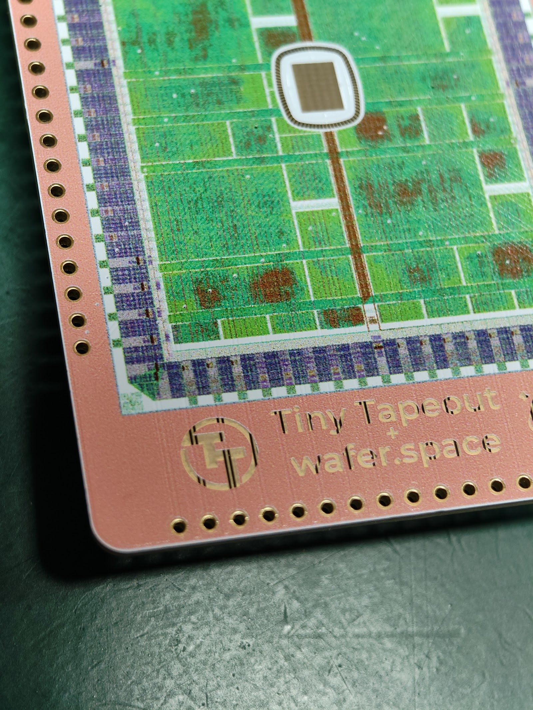
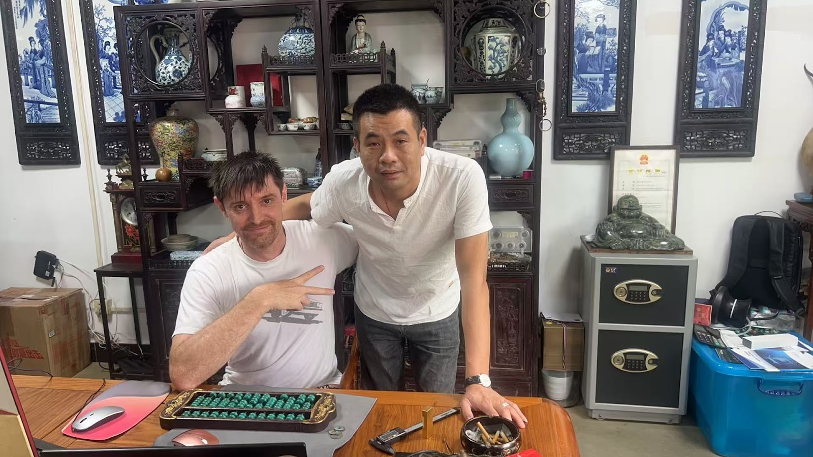
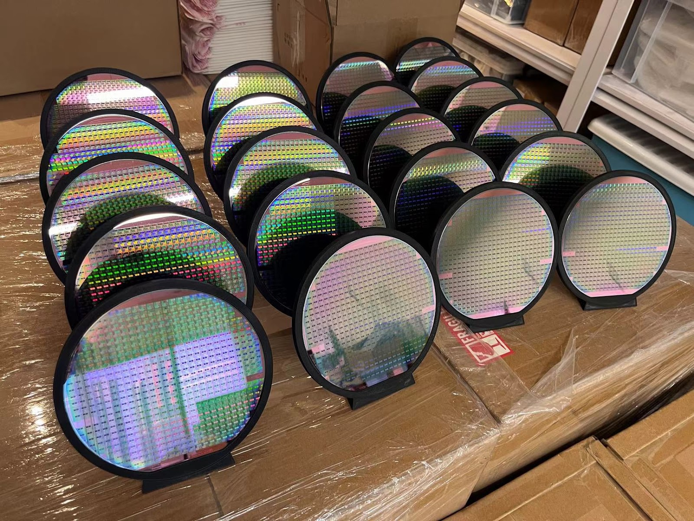

Who we work with
Customers
We support teams across the ASIC ecosystem, including wafer.space and Tiny Tapeout — helping their users get bare die designs turned into working, tested hardware.
Projects & partners





Who we work with
We support teams across the ASIC ecosystem, including wafer.space and Tiny Tapeout — helping their users get bare die designs turned into working, tested hardware.


